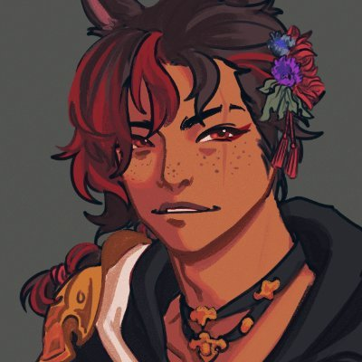

About Me

Hello! I stream as @CrowDalova on Twitch and YouTube, named for my character in Final Fantasy XIV: Online. I've been an affiliate-level streamer since 2020, which I attained after a 30-day project celebrating my anniversary of playing my favorite MMO. Since I began this journey, I've streamed over 300 hours on Twitch, began a charity project, and have started several projects both solo and with friends I play with. Here you'll findthings from my time as a streamer such as:
- Metrics
- Projects
- Achievements
- Charity Work
- and more
Additionally, you'll be able to find information on things like collaborations, overlay tips and tricks, how I set up my spaces, and other thoughts on how I optimize my streaming experience.
Finally, you can find me on the following social media and streaming channels: